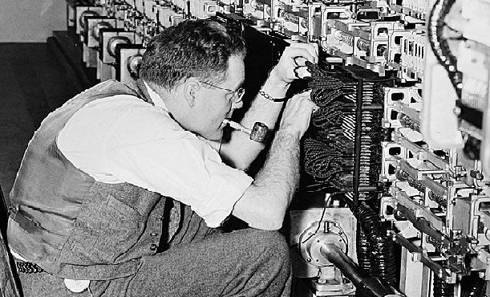

We can only see a short distance ahead, but we can see plenty there that needs to be done.

Biography
Alan Turing was a brilliant mathematician and pioneer of computer science who's work can be divided into
three chronological phases — mathematics, code-breaking, and artificial intelligence.
In 1936, he developed the idea for the Universal "Turing Machine"(the basis for the first computer),
which is simple, and yet capable of solving any form of algorithms that can be measured and quantified.
Turing's first real venture into security was also his best known. Between 1939 and 1944 he developed a
machine called "Bomb" that led the code breaking efforts at Bletchley Park to decrypt radio traffic sent
using the German Enigma device. In 1950 Turing published “Computing Machinery and Intelligence,” from which
the term “Turing Test” derived which is known as “CAPTCHA” (Completely Automated Public Turing test to tell
Computers and Humans Apart). Turing also developed one of the very first computer chess games. But he also
studied physics, especially as a young man.
Alan was awarded the 'Smith's Prize' in 1939, by the 'University of Cambridge' for his exceptional
contribution in the field of applied mathematics. In 1945, this great mathematician was honored by King
George VI with the 'Most Excellent Order of the British Empire' for his services during the 'World War II'.